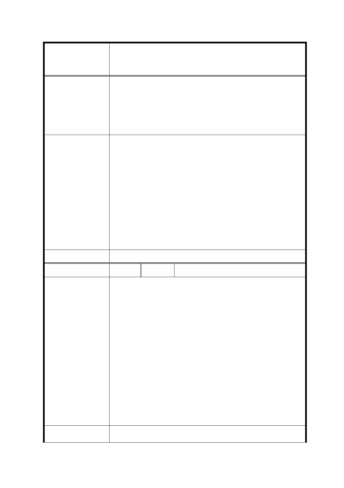

修訂臺北市信義計畫地區細部計畫（第三次通盤
案 名 檢討）案
穩定之「水」「電」供給之用。而今變電所乃於 101 大樓
興建時，就近設置於其旁廣場用地下方。而自來水加壓站
係地下式設施，以信義計畫區開度發展的精華地段仍維持
此種鄰避性設施，實應迅行檢討變更，以發揮土地資源有
效利用，並促進都市環境景觀之提昇。
1. 本計畫已分別於臺北 101 北側（與世貿三館所夾範圍）及東
側（信義廣場）規劃廣場用地，並均已開闢使用中。又 A21
世貿三館雖為公有土地，惟其目前仍有舉辦大型展覽之使用
需求，故將俟南港世貿二館完工後，視未來本市會展產業發
市 府 回 覆 意 見 展情行，檢討其使用機能。
2. 另本計畫區東北側之變電所及機關用地緊鄰 A25 基地，部分
仍在使用當中，閒置部分經洽本府財政局將納入該 A25 基地
後續設定地上權招標文件，要求得標廠商進行認養及綠美
化，並開放供公眾使用。
委 員 會 決 議 依市府回覆意見辦理。
編
號 31
陳情人 台北市廣告工程商業公會
有關 貴會擬於 103 年 3 月 12 日(星期三)召開「「修訂臺北市信
義計畫地區細部計畫（第三次通盤檢討）案」專案小組會議」，
說明如下：
一、 貴會 103 年 3 月 6 日北市畫會一字第 10330177500 號書函
敬悉。
陳情理由
二、 旨揭乙案，前於 103 年 1 月 23 日第 654 次委員會議中，
敝會已說明本次通盤檢討修正有關「廣告招牌」內容未廣
納相關專業團體意見，建請應再重新邀集相關單位人員研
議後再行修訂，以符民意。
三、 上述重新研議事宜未召開前，本會拒絕再參與任何後續有
關審查事宜，以免流於背書之嫌及維護我廣告同業權益。
建議辦法
41